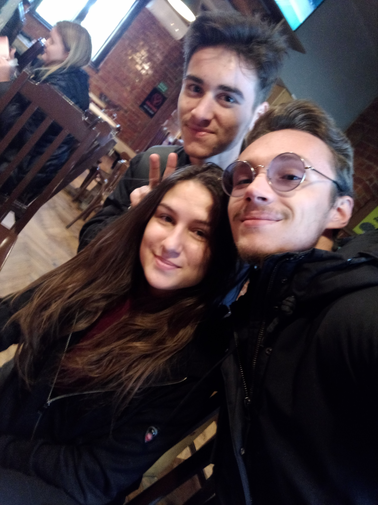
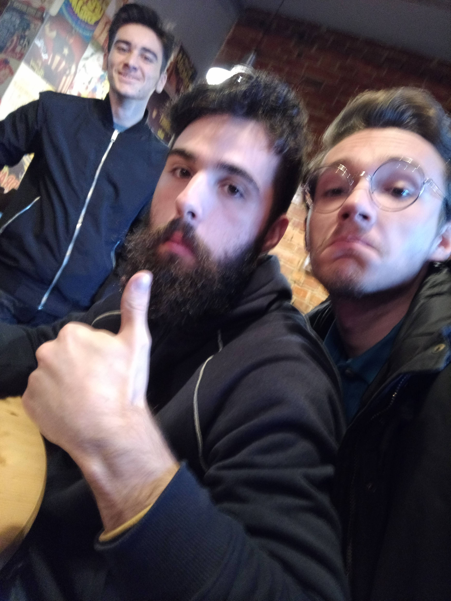
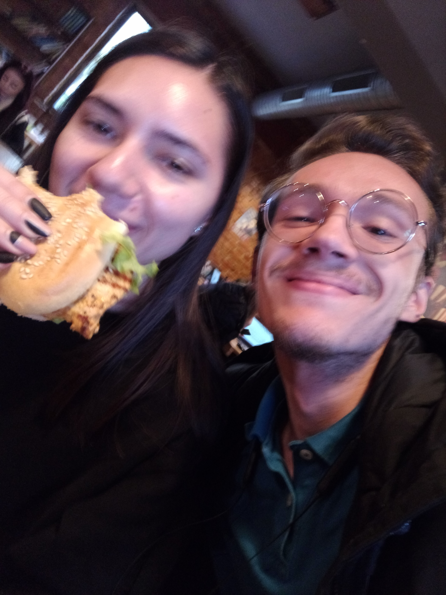
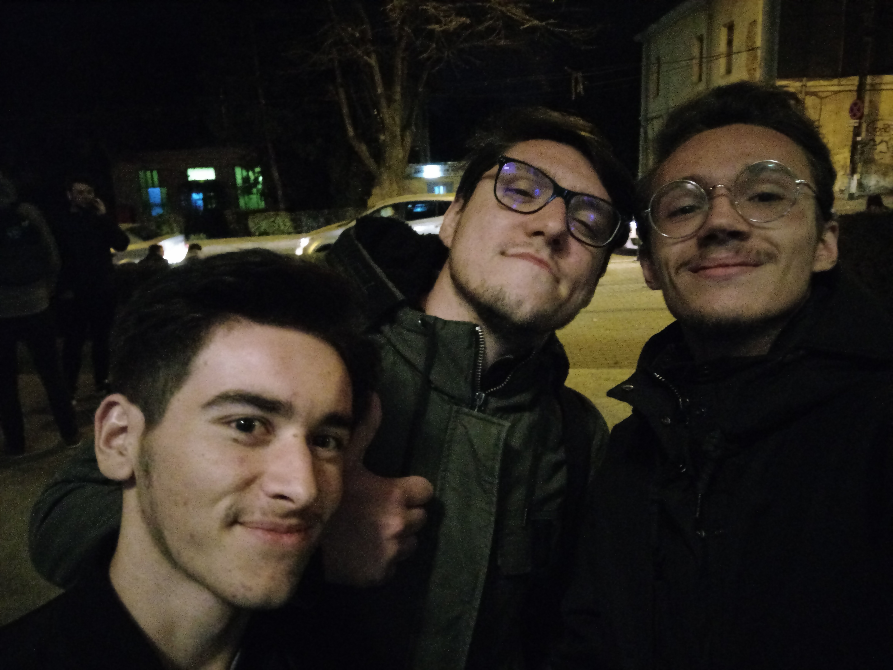
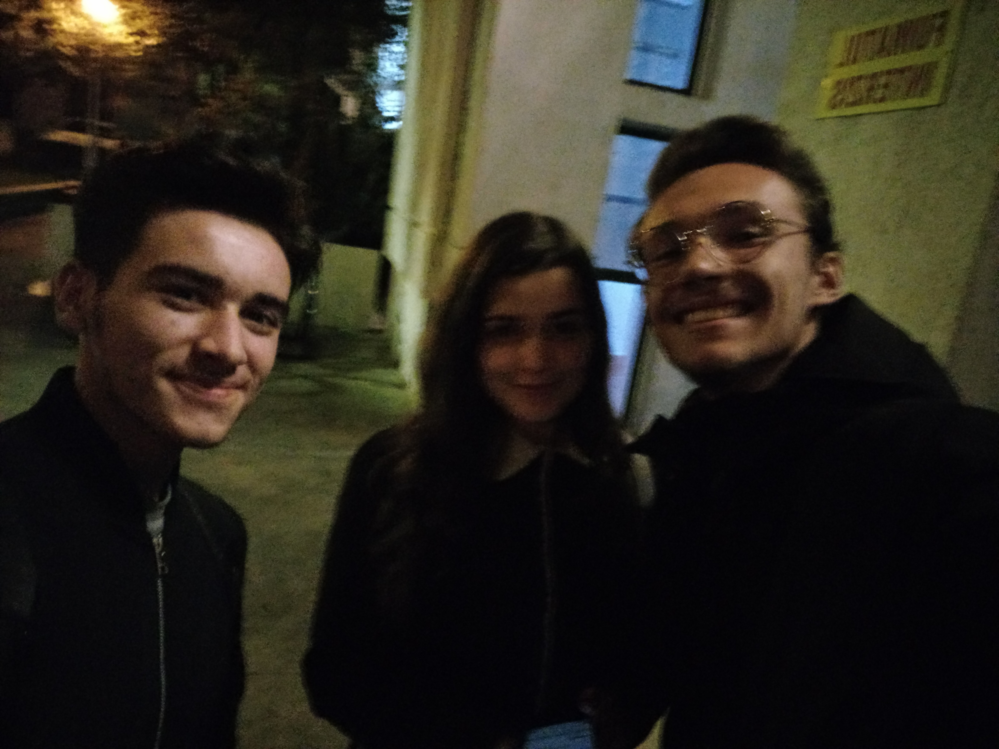
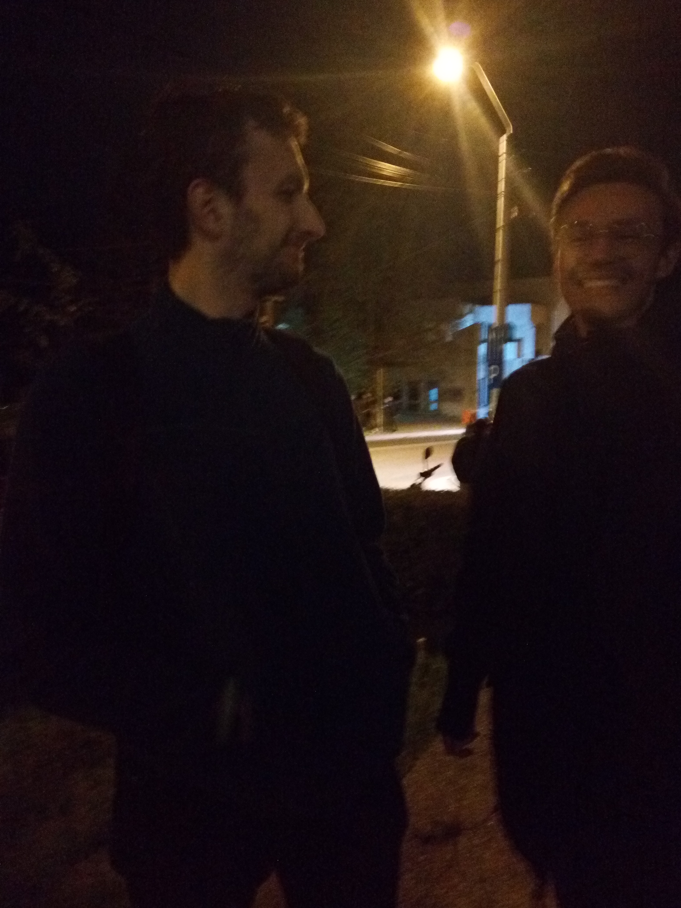

E greu, e greu de spus. Au fost părți bune, părți rele. Mai multe bune decât rele. Recomand oricui. Practic cam ești fraier dacă nu ești în ASII. Viața nu e la fel fără ASII, mama nu e în ASII și mie nu-mi place de mama pentru că nu e în ASII.

Stai să mă gândesc *și a fost bulangiu și a început să mănânce*

*Mădă care nu vrea să vorbească*

ASII reprezintă studenția mea. Am intrat în ASII când am început facultatea și n-ar exista facultate fără ASII pentru mine. E o experiență de nota 10/10 care merită trăită ca să nu ai o viața boring de student.

E o experiență foarte faină. Recomand tuturor boocilor să vină în ASII. Îți faci foarte mulți prieteni alături de care ai parte numai de momente faine.

- Cum ți se pare experiența ASII?